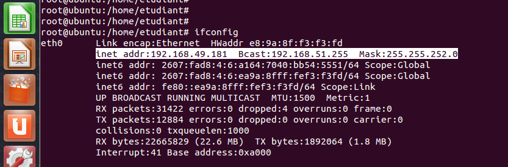

Prerequisites: an Ubuntu server or virtual machine Outcome: a basic SIP server with 2 accounts
sudo su
apt-get install asterisk
It will ask you for a country code, you can check http://countrycode.org/ to get yours. You can check if Asterisk is operational using:
service asterisk status
Now, using your favourite text editor, make a backup of /etc/asterisk/sip.conf and replace it with:
[general]
context=internal
allowguest=no
allowoverlap=no
bindport=5060
bindaddr=0.0.0.0
srvlookup=no
disallow=all
allow=ulaw
allow=g722
allow=alaw
allow=gsm
alwaysauthreject=yes
canreinvite=no
session-timers=refuse
localnet=192.168.1.0/255.255.255.0
[666]
callerid=anonymous
type=friend
host=dynamic
secret=123
context=internal
[777]
type=friend
host=dynamic
secret=456
context=internal
Be sure to update “localnet” to match your network settings. Run ifconfig to check your public IP address:
To apply the settings, execute “rasterisk” and type:
sip set debug on
sip reload
To confirm the new diaplan, run:
sip show users
Now, setup a new dialplan to be able to call other users. Edit /etc/asterisk/extensions.conf and add:
[users]
include => default
include => trunklocal
include => iaxtel700
include => trunktollfree
include => iaxprovider
exten => 777,n,Dial(SIP/777,777,Tt)
[internal]
exten => _XXX,1,Dial(SIP/${EXTEN})